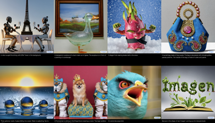
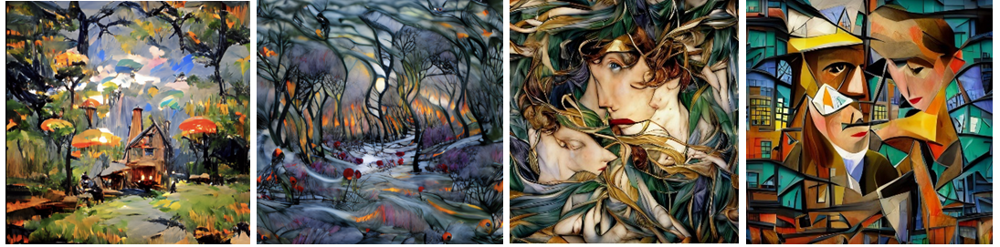
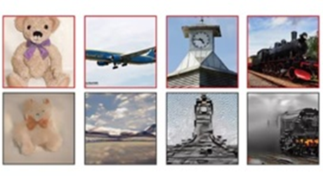

|
Лекция 46.
| ||||||||||||||||||||||||||||||||||||||||||||||||||
| Входные сигналы нейросети | Выходные сигналы нейросети | |||
|---|---|---|---|---|
| Здоровье | Нож | Пистолет | Враг | Поведение |
| 1 | 0 | 0 | 0 | 3 |
| 2 | 1 | 0 | 2 | 4 |
| 1 | 0 | 1 | 1 | 4 |
| 1 | 1 | 1 | 2 | 2 |
| ... | ... | ... | ... | ... |
При этом примеров должно быть достаточно для построения корректной модели.
Пример 2
Обучение сети арифметическим действиям.
| Вход сети «a» | Вход сети «b» | Выход сети «с», с=a+b |
|---|---|---|
| 2 | 3 | 5 |
| 1 | 2 | 3 |
| 1 | 1 | 2 |
| ... | ... | ... |
Сеть обучают на нескольких (не всех) примерах. Затем запрашивают результат на незнакомом примере.
Пример 3
Выявление лжи. Испытуемому задают вопросы и одновременно регистрируют ответы и состояние 7 параметров кожи с помощью аппарата «Детектор лжи». Вопросы (примеры сети) заранее задают такие, на которые человек не будет лгать или будет точно лгать. На этих достоверных примерах сеть обучается.
Далее, когда сеть настроена, испытуемому задают по-настоящему интересующие вопросы. С помощью построенной модели сеть отличает лживые ответы от правдивых. Этим же способом ловят хакеров в Интернете.
Пример 4
Выявление закономерностей изменения валютного курса. Сеть обучают имеющимися большими выборками курса валюты, параллельно давая ей, например, значения солнечной активности или фазы Луны. После обучения сеть может предсказывать курс валюты на завтра по задаваемому ей значению солнечной активности или фазы Луны. Анализ полученных сетью уравнений позволяет определить по величине коэффициентов, влияет ли Солнце или Луна на курс валюты.
Пример 5
Говорящая машина (машина Бриндли). Сеть обучали 10 000 английских слов, вводя в качестве примеров фразы из 3 слов. Из всех возможных 100 000 фраз имели определенный смысл. На входе сети было 10 000 рецепторов (один рецептор – одно слово). На экзамене сети задавали два слова, по которым она генерировала такое третье слово, чтобы фраза имела смысл.
Пример 6
Симметрия изображений. Сети показали 64 изображения и указали, на каких изображениях есть симметрия. Позже на экзамене на новых примерах сеть правильно опознавала симметричные изображения.
Пример 7
Медицина. Сети показывают электрокардиограммы пациентов с одновременным указанием на наличие у них конкретного заболевания. Сеть научилась анализировать кардиограммы и ставить предварительные диагнозы.
Пример 8
Машинный перевод. 10.07.22 Meta* выложила в открытый доступ модель NLLB-200 для перевода текста на 200 языков. Проект «No Language Left Behind» является частью планов Meta* по поддержке редко используемых языков и разработке универсального переводчика. Он будет использовать NLLB-200 для улучшения перевода в Facebook*, Instagram* и, в конечном итоге, в метавселенной. NLLB-200 — это единая многоязычная модель машинного перевода, которая может переводить на 200 языков с более точными результатами, чем известные на сегодня методы. Модель не требуется сначала преобразовывать тестовый язык в английский, как того требуют другие методы.
Система поддерживает больше языков, чем Google Translate (113) и Microsoft Translator (110). Она переводит с и на мало распространенные языки, такие как лаосский и камба, и 55 африканских языков с «высокоточными результатами». По сравнению с предыдущими моделями ИИ NLLB-200 улучшает качество перевода в среднем на 44%. Точность перевода для некоторых африканских и индийских языков улучшилась на 70%.
Meta* выложила исходный код NLLB-200 в открытый доступ, чтобы другие разработчики могли использовать или улучшать программное обеспечение.
Пример 9
Google Imagen: генерация фотореалистичных изображений по описанию. Google представила Imagen — модель, трансформирующую текстовое описание в изображение c разрешением 1024?1024 пикселей. Imagen превзошла OpenAI DALL-E 2 по степени реалистичности изображений. Imagen является комбинацией языковых моделей-трансформеров, используемых для обработки текстового описания, и диффузных моделей для генерации изображений с последовательным улучшением разрешения. Модель была обучена на датасете LAION-400M, содержащем более 400 миллионов пар «изображение-текст», взятых из Интернета.

Google протестировала Imagen в сравнении с DALL-E 2 с помощью экспертов. По итогам этого теста большинство положительных оценок получила модель Google. Помимо этого, Imagen достигла нового state-of-the-art значения FID 7,27 в датасете COCO, хотя не обучалась на изображениях из этого датасета.
Пример 10
Генеративное искусство, нейросеть Botto. В последние годы в самых разных отраслях всё большее внимание уделяется так называемому генеративному искусственному интеллекту. Это методы машинного обучения, которые могут изучать имеющиеся объекты и использовать полученные знания для получения нового контента: текста, звуков, изображений — и для решения прочих задач.
В проектах использованы технологии генерации изображений и видео на основе заданного текста, алгоритмы распознавания лиц, технологии 3D-печати. Использованы известные нейросети StyleGAN2 и CLIP. Нейросеть Botto была создана международной группой разработчиков и художников.
На примере искусства от Botto видны особенности художника с искусственным интеллектом. Как отмечают его разработчики, во-первых, у него есть серьезные преимущества перед коллегами-людьми. Он может очень быстро изучить историю живописи, анализируя и каталогизируя её и запоминая всё, что он когда-либо видел. Там, где художник-человек должен работать над холстом в течение нескольких дней, месяцев или даже лет, ИИ может создать свои работы за считанные минуты. Конечно, такое искусство является скорее подражанием, чем самостоятельным произведением, но то же самое можно сказать и о подавляющем большинстве художников-людей.
Алгоритм состоит в следующем. В начале Botto генерирует случайную последовательность слов и предложений, которую передает в обученную на произведениях искусства нейросеть, а обратно получает изображение. Другая программа определяет, насколько близок этот результат к представлению исходной последовательности слов, и заставляет нейросеть настраивать параметры созданного изображения до тех пор, пока оно не наберёт определённый балл. После создания окончательного изображения программа генерирует уже название картины: случайные комбинации из двух слов загружаются в программу до тех пор, пока она не найдет ту, которая, по её мнению, хорошо согласуется с содержанием изображения.
Из 300 начальных запросов в день Botto создаёт 300 изображений, которые затем передаются на оценку членам сообщества Botto, голосующим за представленные им произведения, и каждую неделю победитель продаётся с аукциона на платформе SuperRare.
При этом оценки людей, выставленные при голосовании, также используются для обучения ИИ. Botto извлекает уроки из всей этой обратной связи. Он ищет закономерности в том, что нравится сообществу, и адаптирует своё искусство на основе полученных результатов.

Пример 11
Подобные примеры привели разработчиков к построению нового типа компьютерной памяти, более соответствующего человеческой памяти: гетероассоциативной, автоассоциативной, интерполятивной, двунаправленной ассоциативной.
Гетероассоциативная память – если набор входных сигналов близок какому-то из выученных сетью наборов, то на выходе сети появлялся соответствующий этому набору сигнал. Сеть вспоминала ассоциацию. xвх ≈ xi → yвых ≈ yi.
Автоассоциативная память – сеть восстанавливала полный вектор входных сигналов по его части (например, восстановление всего лица по его части).
Интерполятивная память – если x=xi+d, то f(x)=f(xi+d)=yi+e. Фактически память имитировала процесс индукции.
Двунаправленная ассоциативная память – ассоциативная память, которая работала в обе стороны, от входа к выходу и от выхода ко входу.
Пример 12
Чтение сетью мысленных образов. Исследователи Ю Такаги и Синдзи Нисимото (Высшая школа передовых биологических наук Университета Осаки, Япония) использовали Stable Diffusion, включённую в OpenAI DALL-E 2 для чтения мысленных образов. В обучении сети участвовали 4 участника. Им показывали наборы из 10 000 изображений. Одновременно собирали снимки их мозговой деятельности методом ФМРТ (функциональная магниторезонансная томография) и измеряли изменения потока крови, на которых обучили нейронную сеть. На экзамене по новым ФМРТ сеть составляла изображение, которое в это время скрытно от неё разглядывал участник. Точность предсказания сетью мысленных образов участников составила 80%.

Презентация:
| Лекция 45. Понимание мира и его ощущения в нейронной сети. Образование новых сложных понятий | Лекция 47. Роботы и чувства, три закона робототехники | ||||||||||||||||
|
|||||||||||||||||